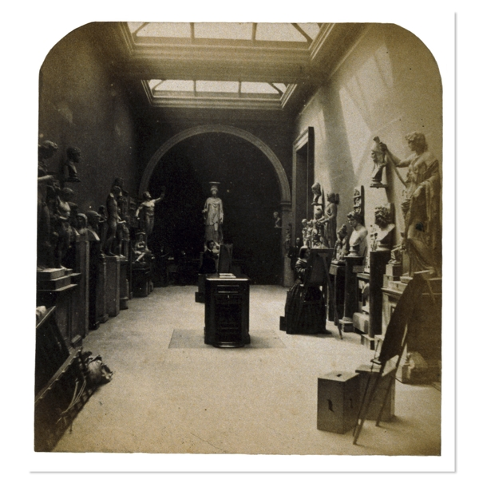
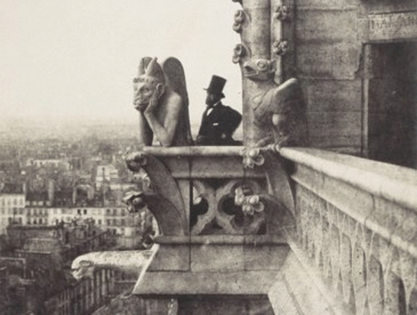
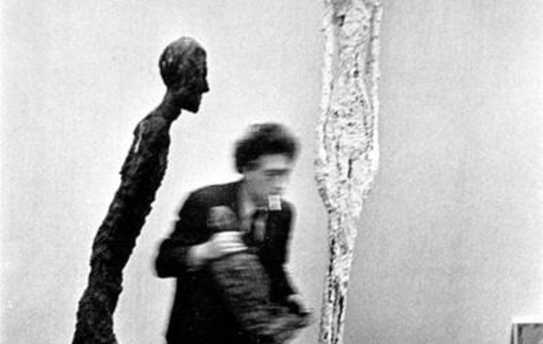

-
Imaging Sculpture: The Orginal Copy at MoMA
by Laila Pedro August 16, 2010
It’s rare for a museum exhibition to grapple actively with older work in a new or groundbreaking way. Particularly in the major New York museums, one often has the sense that a new idea has to pass through so many steps of approval, diplomacy, and networking, that it finally arrives as a rehashing of established, accepted tropes. The MoMA’s new show The Original Copy: The Photography of Sculpture, 1839 to Today may not be overtly adventurous – most of the works are by major, canonical, Western, male artists – but it does clearly articulate a concept—in this case the oddly co-dependent, illuminating relationship between photography and sculpture—and explores it in directions both predictable and legitimately surprising. The reliance on established artists could be due, in part, to a general discomfiture when it comes to sculpture—people are generally not as familiar with sculptors as they are with painters—so it makes some sense that they brought out the big guns: Brancusi, Duchamp, a bunch of Greco-Roman things you can find in the Met, many shots from within the Met itself (see, for instance, Elliott Erwitt’s photo from 1954). You know: Sculpture.
The central conceit of The Original Copy, is that it “presents a critical examination of the intersections between photography and sculpture, exploring how the one medium has become implicated in the understanding of the other.” This makes for some intriguing intimations, not only about the particularities of the photo/sculpture relationship, but about where the boundaries lie between mediums in general, and how these affect and are in turn affected by the artworks they supposedly contain. Because the show is so broad it’s impossible to make any general statement about it— but several interesting currents are explored, some more successfully than others.
One major theme, particularly in the chronologically earliest photos, is that of artists at work. It’s as though the photographers, giddy with their new capability, sought to document something parallel to their own process. So we have various artists’ photos of salon days in Paris depicting groups of grave-faced young men gazing earnestly at classical bodies. The catalog situates 19th century Paris at the ‘dawn of modernism,’ and among the best of the many representations of this idea is Brassaï’s At the Académie Julian actually from 1934. It’s a small frame, so crowded with figures, both human and sculptural, that it’s hard to focus on any one detail or face or body. Rather our awareness is drawn to the frame itself– it’s a brilliant and arrogant move for a photographer to make us so aware of his act of photographing, rendering his subjects nearly moot. Among all the sculpted shapes at the Académie, one is hard-pressed to find anything other than the human form as a sculptural model. Its primacy is almost obscene to a contemporary viewer. This might be a reminder of why, with some notable exceptions (John Currin in painting, Antony Gormley in sculpture), the human body has lost its singular place at the apex of visual representation. All those endless copies of bodies in plaster and marble threaten to become stifling, an impression highlighted by their tense relationship to the frame that holds them. The Brassai photo is in nice contrast to Roger Fenton’s The Third Graeco-Roman Saloon on Artist’s Day. Here again we have young men in smocks (the first thing they brought to my mind were the white lab coats worn by Clinique employees) working very seriously with many classical figures. Fenton’s image lacks the visual punch Brassai’s packs because it is much less about the photo itself, calling out attention to the decades between them. It is part of both the artist-working motif and the strong Classical nostalgia that runs through the 19th century section of the show. Théodule Devéria’s Greek Serapeum, from 1859, skates a fine line between overt sentimentalism (crushed statuary, forgotten work of a master, etc) and a genuine kind of pathos and discomfort elicited by the angled framing and de-centered perspective.
As the hoary cliché has it, Paris was the capital of the 19th century, particularly in the arts, and the pictures of Parisian exteriors give a sense of photography’s ability to reposition or re-orient our experience of art. This happens through framing, yes, but also by virtue of photography’s being fast enough to capture odd places where a painter could never perch, altering not only our perception of the art object but of the world around us. In this respect, Charles Nègre’s Angel of Resurrection on the Roof of Notre Dame from 1853 captures the transformative experience of viewing both the sculpture and the city from an angle that, a few short years prior, would have been accessible only to a few intrepid climbers, and only for a brief moment. Since Nègre’s photo was taken the ubiquitous postcard of a gargoyle overlooking the city has become one of the most classic souvenirs of Paris. His The Vampire, also included in this show, remains one of the most famous examples, speaking to a lasting and widespread affection for the simple juxtaposition of a sculptural figure in the foreground set against the city fading away before our eyes. Here the camera allows us to choose our focus, and to see the city through the artwork, which is how most people have come to think of seeing Paris.
There are areas of the exhibition dedicated to giants of the form, notably Rodin and Brancusi. Curiously, these works seem to be more about explicitly celebrating sculptors than photographers. The photographs of Rodin’s work are astonishing. Though not taken by the sculptor himself they are carefully staged and controlled, framing the light hitting the bodies in a way that seem to breathe an uncanny whiff of life into the bronze figures. Counterintuitively, the mechanical process of photography seems to bring Rodin’s human figures closer to us, to humanize them through some uncanny visual alchemy.
Brancusi actually photographed his own work, and perhaps this is what gives his photos such an immediate and intimate rapport with his sculptures. It’s as though Brancusi used photography in an effort to further illuminate the work. His ‘photos radieuses’ reflect an active manipulation of the image that creates an almost physical response in the viewer; the photos become a sensual abstraction of image in the same way the sculptures are an abstraction of mass. One of the joys of visiting the Pompidou Centre in Paris is the free admission to the preserved Brancusi ‘atelier’ next door. The forms, finished and unfinished, each retain their particular sense of rightness and purity. It’s well worth it to go from Brancusi’s photos of his own, mostly unfinished works, to the finished products downstairs at the MoMA– there might be no better way to experience the multiple levels of suggestion on which the work, and its representations, are operating.
Cartier-Bresson’s photo of Giacometti works in a similar vein: its perfect, evocative fuzziness lets us see Giacometti the man with the same eyes as we see his work: slightly blurred, yet nonetheless evocative and specific in every detail.
Perhaps the best pieces in the massive show, of which I have only addressed a few, are those that illustrate not only why and how sculpture can be photographed but why it ought to be, needs to be, even. These works justify themselves, like An-My Le”s Milani Workshop, from 1991. A large lion regards a tiny model of Michelangelo’s David, framed against a window. The photograph plays with scale and subjectivity, joking with the canon, and shifts our perspective in such a way that our subjective gaze is confused with the lion’s– that is, with the work within the work. This confluence of ways of seeing is at the heart of the The Original Copy and the exhilaration of experiencing works without being bound by medium or genre rises from the simple, complete articulation of artists and curators who have asked, and answered, the right questions.